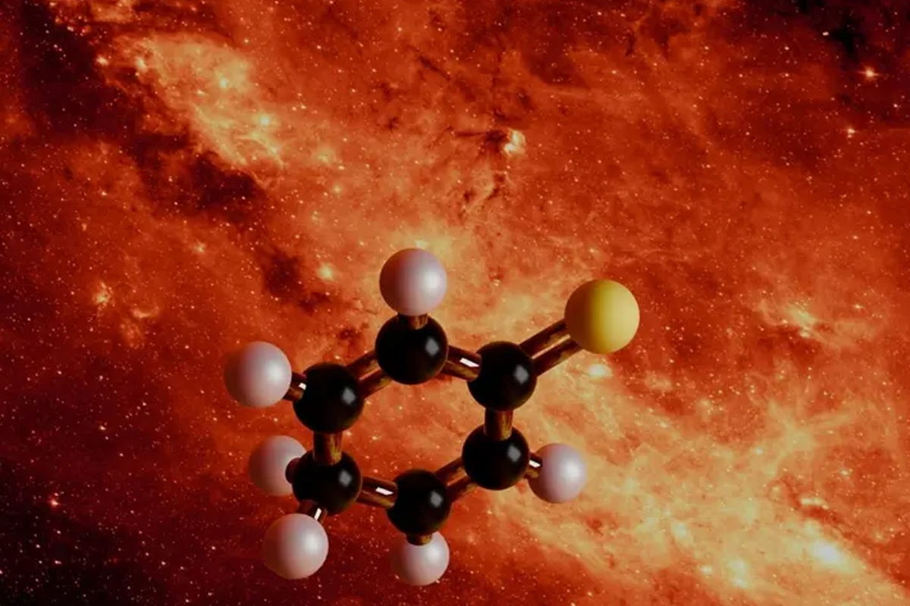

Quebra de Regras Centenárias
Pesquisadores desafiaram a regra de que ligações duplas não podem ocorrer em posições de "ponte" em sistemas biciclicos, eles fizeram isso utilizando novos métodos
Agentes de captura
Simulação de Ambiente Espacial
| Metodo | Condiçao simulada | Objetivo | Metodos comuns |
|---|---|---|---|
| Tempertura | 10K(-263°C) a 50K | Simular gelos interestelares, estabilizar moléculas reativas | Hélio líquido, criostatos |
| Radiação | VUV (Lyman- ), Raios-X, Elétrons | Formar radicais (moleculas "impossíveis") | Lâmpadas VUV, Canhões de elétrons |
| Tempo | Escalas de fs a ns (Simulação) | Observar formação/quebra de ligações | Dinâmica Molecular (MD), Monte Carlo |
Imagens

